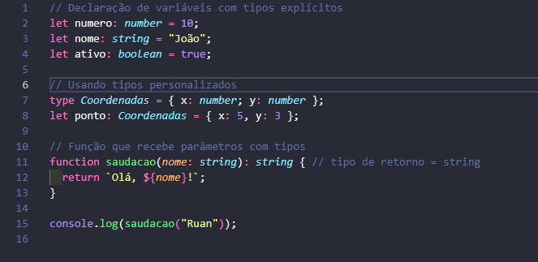
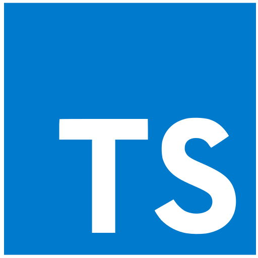

Tipos Básicos
Uma das principais características do TypeScript é o seu sistema de tipos. Diferente do JavaScript puro, é possível declarar explicitamente o tipo de uma variável, parâmetro de função ou retorno, permitindo que o compilador identifique erros antes mesmo da execução do código.
- string - representa cadeias de texto
- number - representa valores numéricos, inteiros ou decimais
- boolean - representa valores verdadeiro ou falso
- any - desativa a checagem de tipos para aquela variável
- unknown - semelhante ao any, porém mais seguro
- never - representa valores que nunca ocorrem
Exemplos Visuais
As imagens abaixo ilustram conceitos relacionados ao TypeScript. A primeira é apenas ilustrativa e a segunda funciona também como link para a documentação oficial da linguagem.


Interfaces e Type Alias
Para descrever a estrutura de objetos, o TypeScript oferece dois recursos parecidos, porém com diferenças importantes: as interfaces e os type alias. Ambos permitem nomear um formato de dado e reutilizá-lo em diversas partes do código, mas se comportam de maneira distinta em certas situações.
| Característica | Interface | Type Alias |
|---|---|---|
| Reabertura (declaration merging) | Suportada | Não suportada |
| Uso principal | Descrever formato de objetos e classes | Uniões, interseções e tipos primitivos |
| Herança | Usa a palavra-chave extends | Usa o operador de interseção "&" |
| Ambas deixam de existir após a compilação, pois o TypeScript é convertido em JavaScript puro. | ||
Generics
Generics permitem criar componentes, funções e classes reutilizáveis que funcionam com múltiplos tipos, mantendo a segurança de tipos. Em vez de fixar um tipo específico, define-se um parâmetro de tipo, como T, que é substituído pelo tipo real no momento em que a função ou classe é utilizada.
Formulário de Feedback
Utilize o formulário abaixo para enviar dúvidas, sugestões ou comentários sobre o conteúdo apresentado nesta página sobre TypeScript.
Vídeo Demonstrativo
Assista ao vídeo abaixo para ver exemplos práticos de código em TypeScript e entender melhor como a tipagem estática funciona na prática.